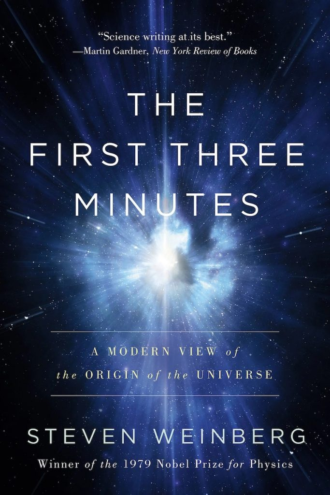
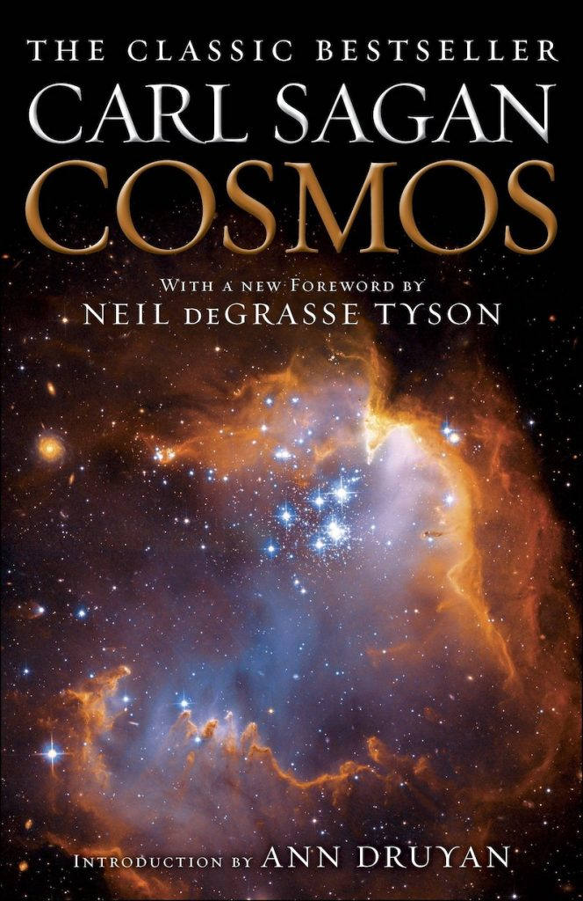
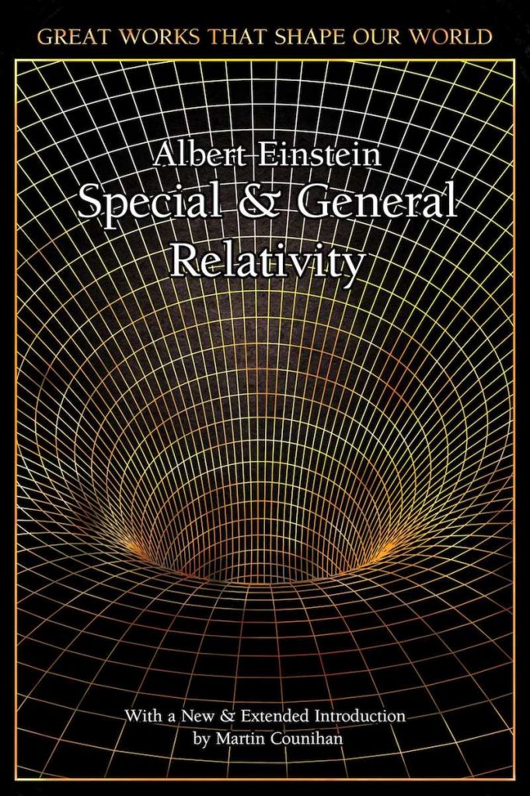
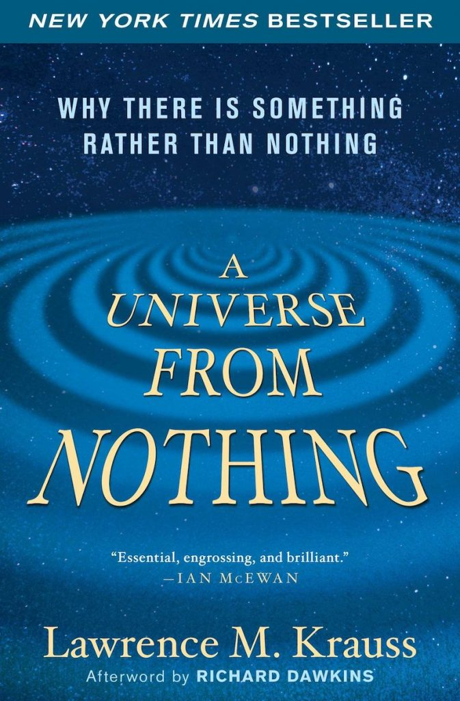
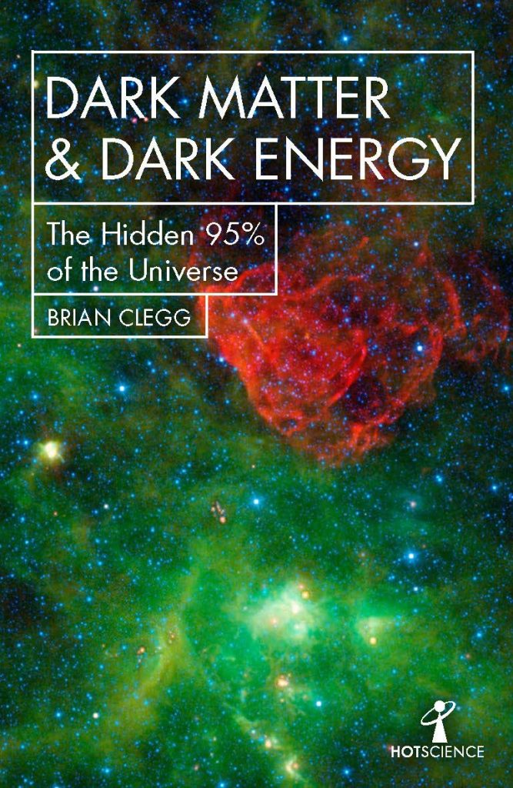
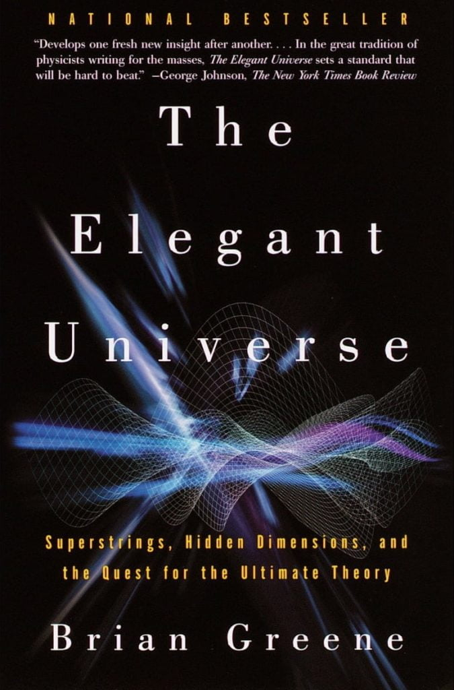

Astrophysics for people in a hurry by Neil deGrasse Tysonဒီစာအုပ်ကို ရေးသားသူ ကတော့ နာမည်ကျော် နက္ခတ် ပညာရှင် တစ်ဦး ဖြစ်တဲ့ Neil deGrasse Tyson ပဲ ဖြစ်ပါတယ်။ Big Bang မဟာ ပေါက်ကွဲမှု က စလို့ black hole တွင်းနက် တွေ အထိ အကြောင်းအရာ စုံအောင် တင်ပြ ထားပါတယ်။ ဒီလိုပဲ နှိုင်းရ သီအိုရီ (Special and General Theory of Relativity) နဲ့ ကွမ်တမ် ရူပဗေဒ တို့အကြောင်းလဲ တင်ပြ ထားပါတယ်။ စာ အရေးအသား ရှင်းလင်းပြီး အထက်တန်း အဆင့် အင်္ဂလိပ်စာ အခြေခံ ရှိသူ မည်သူမဆို ဖတ်ရှုနိုင်တဲ့ ရိုးရှင်းတဲ့ အင်္ဂလိပ်စာ အရေးအသား နဲ့ ရေးသား ထားတာမို့ မဖြစ်မနေ ဖတ်ရှုသင့်တဲ့ စာအုပ် ဖြစ်ပါတယ်။
A brief history of time
A brief history of time by Stephen Hawkingနာမည်ကျော် ရူပဗေဒ ပညာရှင်ကြီး စတီဗင် ဟော့ကင်းရဲ့ ရောင်းအကောင်းဆုံး စာရင်းဝင် စာအုပ် ဖြစ်ပါတယ်။ အကြိမ်ကြိမ် ပြန်လည် ရိုက်နှိပ်ရပြီး ဘာသာ ပေါင်းစုံ ကိုလဲ ပြန်ဆို ခဲ့တဲ့ စာအုပ်ပါ။ ဒီ စာအုပ်ဟာ နက္ခတ်နဲ့ ရူပဗေဒ အခြေခံ လုံးဝ မရှိတဲ့ သူတွေ အတွက် ရည်ရွယ် ရေးသား ထားတဲ့ စာအုပ် ဖြစ်ပါတယ်။
The first three minutes

The first three minutes by Steven Weinbergနိုဘယ်ဆုရ ရူပဗေဒ ပညာရှင်ကြီး Steven Weinberg ရေးသားတဲ့ စာအုပ်ဟာ big bang မဟာပေါက်ကွဲမှုကြီး ဖြစ်စ ပထမ ၃ မိနစ် အတွင်းမှာ ဖြစ်ပျက်ခဲ့တဲ့ အဖြစ်အပျက် တွေနဲ့ ပါတ်သက်လို့ အသေးစိတ် တင်ပြ ထားပါတယ်။ ဒီ မဟာ ပေါက်ကွဲ မှုကြီး နဲ့ ပါတ်သက်တဲ့ အထောက်အထား တွေကိုလဲ တင်ပြထားတာမို့ မဟာပေါက်ကွဲမှု ဖြစ်စဉ် ဖြစ်နိုင် မဖြစ်နိုင် ဆိုတာကို စာဖတ်သူတွေ အနေနဲ့ ချင့်ချိန် နိုင်ကြမှာ ဖြစ်ပါတယ်။
Cosmos

Cosmos by Carl Saganနာမည်ကျော် နက္ခတ် ပညာရှင် Carl Sagan ရေးသားတဲ့ စာအုပ် ဖြစ်ပါတယ်။ ဒီ စာအုပ်မှာ စကြာဝဠာနဲ့ ပါတ်သက်တဲ့ နက္ခတ်ဗေဒ၊ ရူပဗေဒ၊ ဓါတုဗေဒ၊ ဇီဝဗေဒ ဆိုင်ရာ အချက်အလက် တွေကို ရှင်းလင်း တင်ပြ ထားပါတယ်။
Special and general relativity

Special and general relativity by Albert Einsteinနှိုင်းရ သီအိုရီ ကို တင်ပြခဲ့တဲ့ အိုင်းစတိုင်း ကိုယ်တိုင် ရေးသားခဲ့တဲ့ စာအုပ် ဖြစ်ပါတယ်။ ဒီ စာအုပ်ဟာ သင်္ချာ အခြေခံ သိပ်မရှိတဲ့ အထက်တန်း အဆင့် ကျောင်းသားတွေ အတွက် ရည်ရွယ်ပြီး ရေးသားခဲ့တဲ့ စာအုပ် ဖြစ်ပါတယ်။
A universe from nothing

A universe from nothing by Lawrence M. Kraussရူပဗေဒ ပညာရှင် Lawrence M. Krauss ရေးသားတဲ့ စာအုပ် ဖြစ်ပြီး ဘာ့ကြောင့် စကြာဝဠာ ဖြစ်တည် လာရ သလဲ ဆိုတဲ့ မေးခွန်းကို ဖြေကြား ပေး ထားတာပါ။
Dark Matter and Dark Energy

Dark Energy and Dark Matter by Brian Cleggအမှောင်ဒြပ် နဲ့ အမှောင် စွမ်းအင် အကြောင်း သိလို သူတွေ အတွက် ဖတ်သင့်တဲ့ စာအုပ်ကောင်း တစ်အုပ် ဖြစ်ပါတယ်။ Dark matter ဟာ စကြာဝဠာထဲက ဒြပ်ထု စုစုပေါင်းရဲ့ ၉၅% ရှိတယ်လို့ သိပ္ပံ ပညာရှင် တွေက ယုံကြည် ကြပါတယ်။ ဒီလိုပဲ dark energy ဟာလဲ စကြာဝဠာ ပြန့်ကားမှု ပိုမို လျှင်မြန်လာခြင်းကို ဖြစ်စေတဲ့ အဓိက တရားခံလို့ ယူဆ ထားကြပါတယ်။ ရူပဗေဒ ပညာရှင် Brian Clegg က ရေးသား ထားပါတယ်။
The Elegant Universe

The Elegant Universe by Brian Greeneနာမည်ကျော် Theoretical physicist တစ်ဦးဖြစ်တဲ့ Brian Green ရေးသားတဲ့ စာအုပ် ဖြစ်ပါတယ်။ Brian Green ဟာ String Theory နဲ့ ပါတ်သက်တဲ့ ထိပ်တန်း ပညာရှင် တစ်ဦး ဖြစ်ပါတယ်။ ဒီ စာအုပ်မှာ String theory ကို သာမန် လူပိန်း နားလည်အောင် ရေးသား တင်ပြ ထားပါတယ်။ ကြိုးမျှင် သီအိုရီ ရဲ့ ဒိုင်မင်းရှင်း ၁၁ ခု အကြောင်းလဲ တင်ပြ ထားပါတယ်။